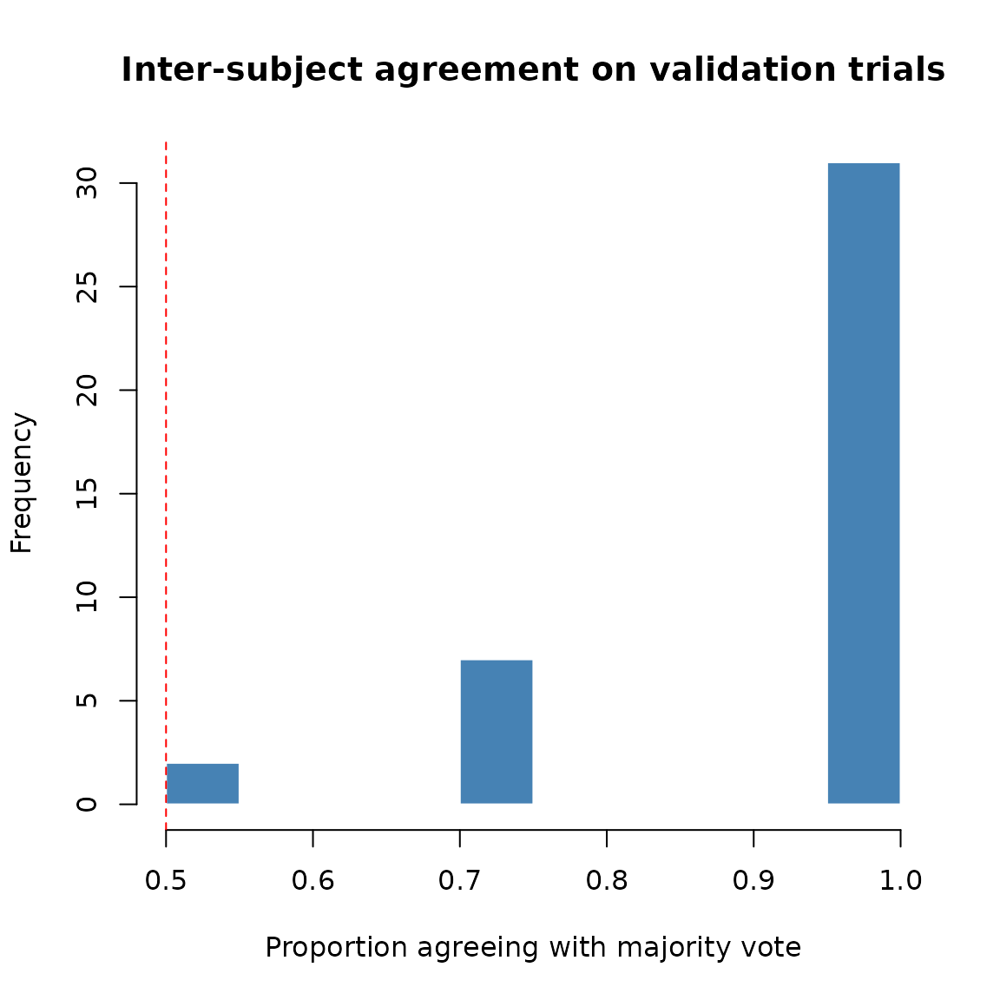
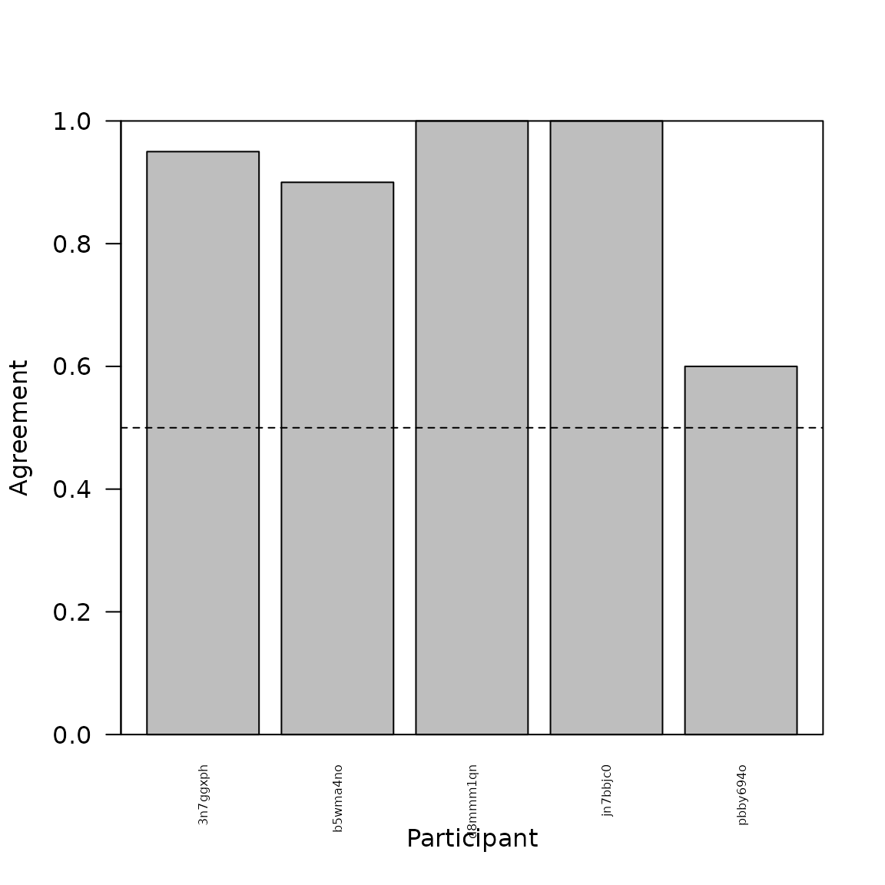
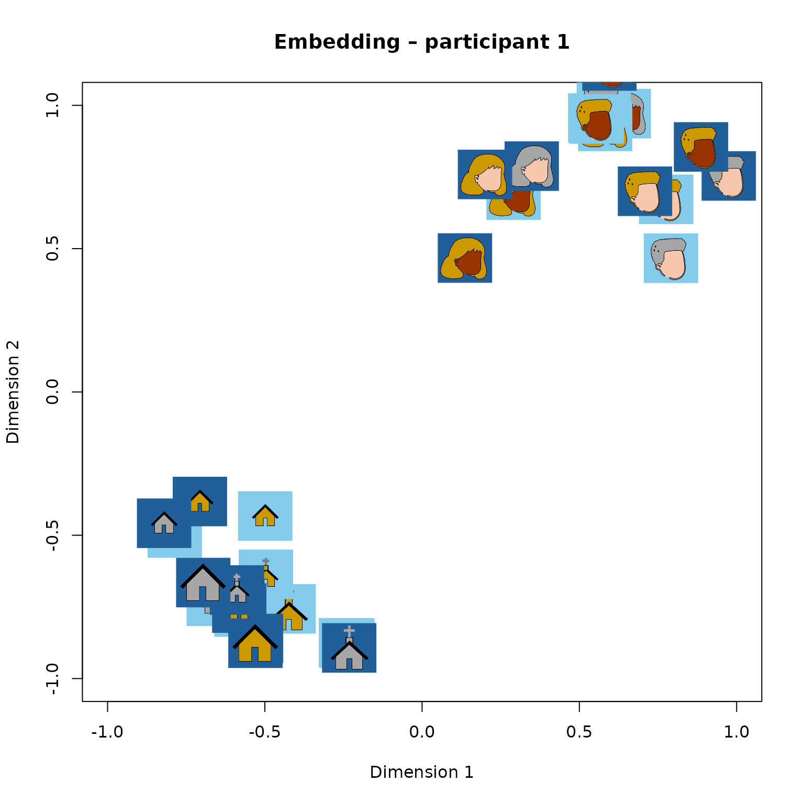
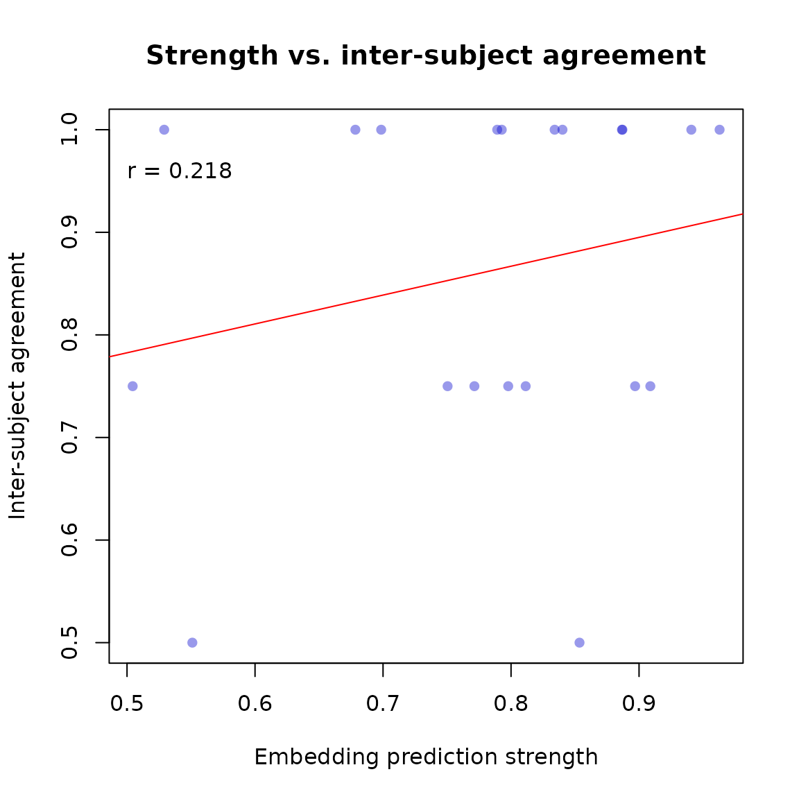
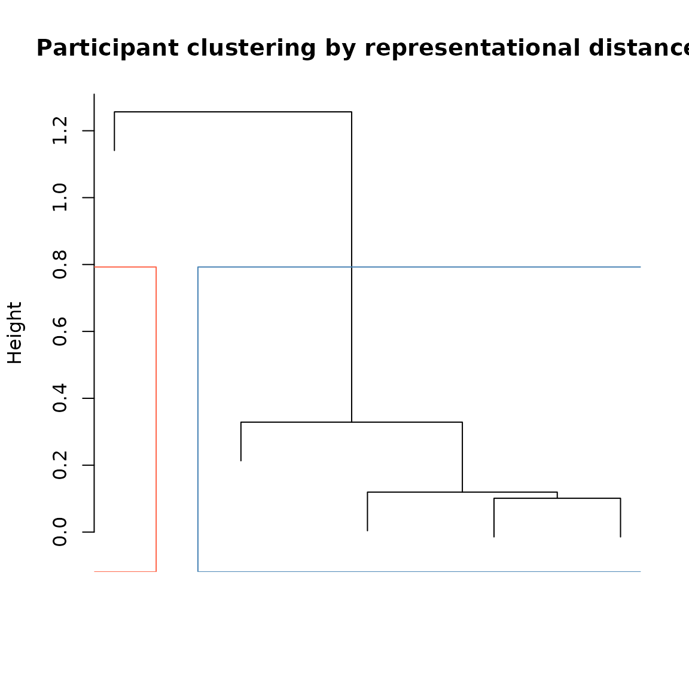
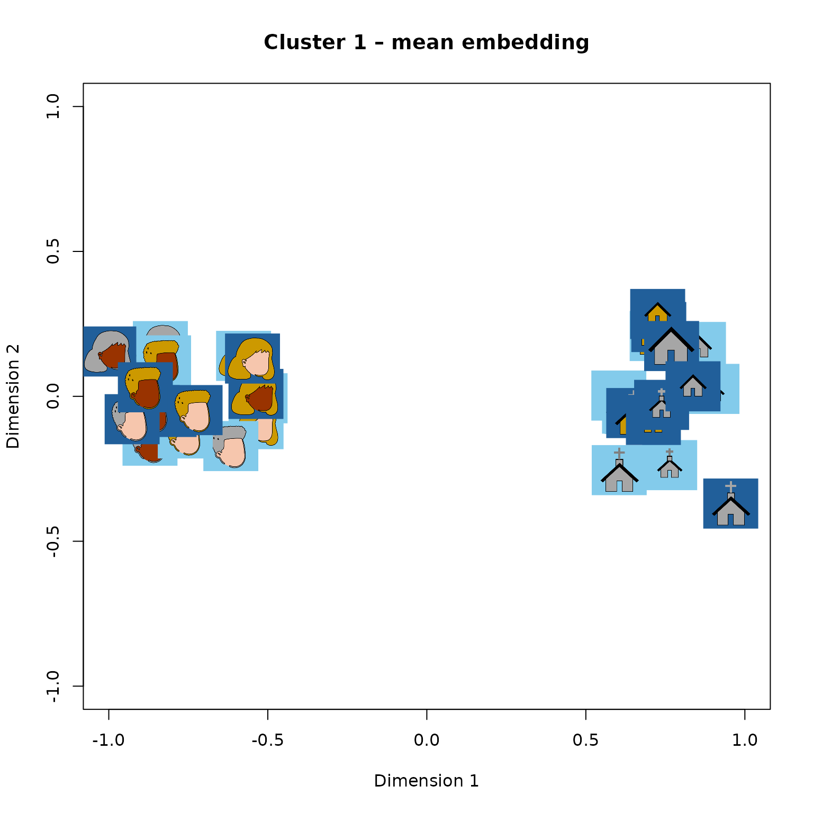
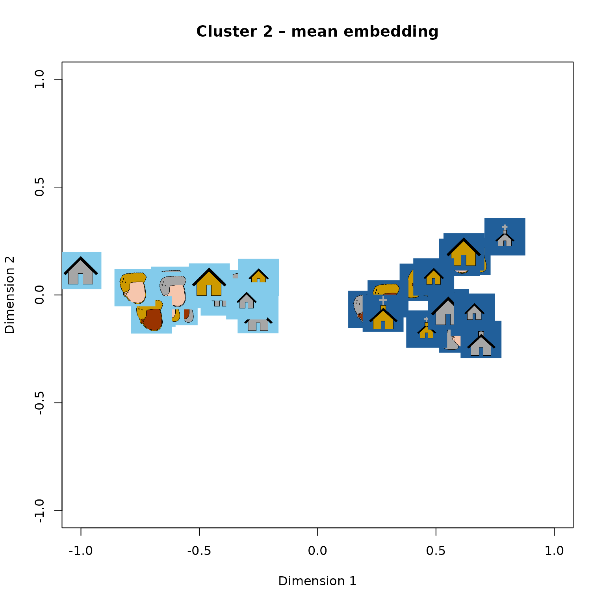
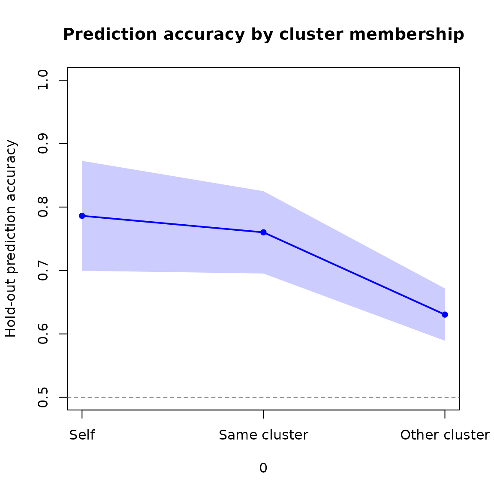
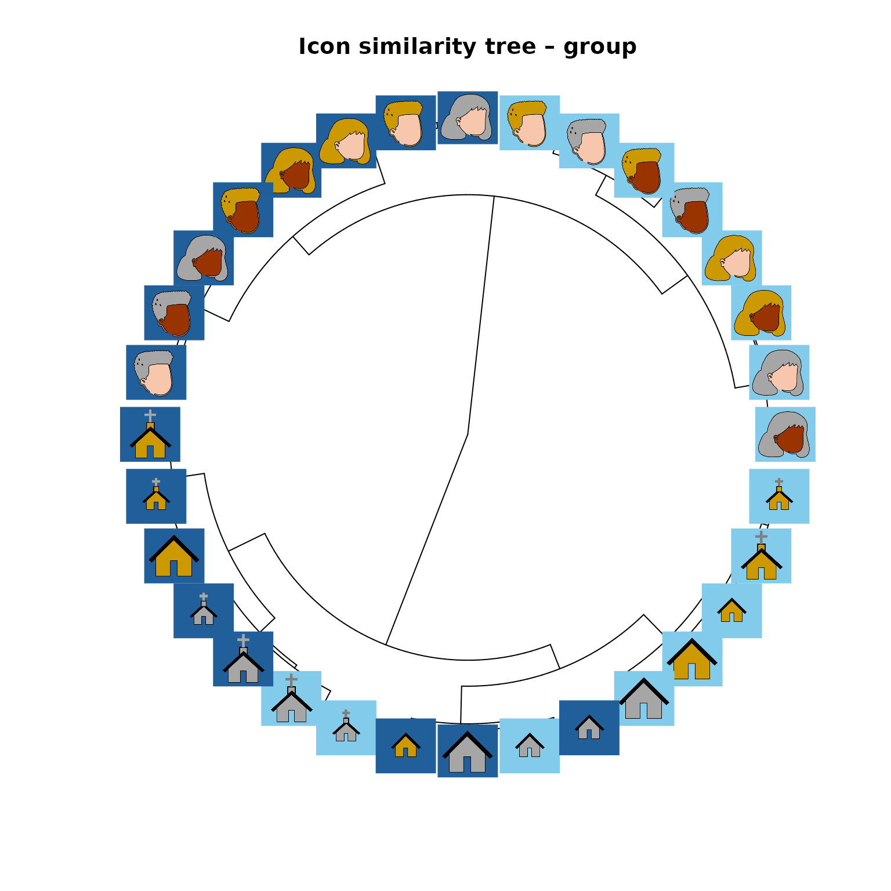

tripletTools Overview
overview_vignette.RmdIntroduction
This package is designed to help analyze and visualize results from triadic comparisons (or triplet tasks), which are used to characterize the structure of mental representations. In a triplet task, a participant sees a referent item and two option items, and must decide which option is most similar to the referent. From many such judgments across many items and participants, one can compute a similarity embedding: a low-dimensional coordinate space in which items that are frequently judged as similar are placed nearby.
tripletTools does not collect data or compute embeddings
— those steps occur outside R. Instead it provides tools for:
- Loading triplet and embedding data files
- Assessing participant data quality
- Measuring inter-subject agreement on shared trials
- Visualizing embeddings
- Evaluating how well an embedding predicts held-out judgments
- Quantifying individual differences in representation
- Clustering participants by representational similarity
This vignette illustrates each of these steps using the example dataset included with the package.
The example dataset
The package includes objects from a triplet study on 32 icon images of faces and buildings. The icons varied in category (face/building), time of day (day/night), and additional features (gender and race for faces; size and kind for buildings). Five participants each judged approximately 230 triplets online.
| Object | Description |
|---|---|
icon_triplets |
Named list of 5 data frames, one per participant, containing trial-by-trial judgments |
icon_emb_ind |
Named list of 5 matrices, one per participant, containing 3-D embedding coordinates |
icon_emb_group |
Single data frame containing a 3-D group embedding |
icon_pics |
Named list of 32 PNG images, one per stimulus icon |
Triplet data
Each element of icon_triplets is one participant’s trial
data:
head(icon_triplets[[1]])
#> X head winner loser worker_id rt Center Left Right Answer sampleAlg
#> 1 1 29 24 19 3n7ggxph 3096 pnhns pncnb pdcos pncnb random
#> 2 2 14 0 24 3n7ggxph 1100 fnmyb fdfob pncnb fdfob random
#> 3 3 30 19 24 3n7ggxph 2616 pnhob pncnb pdcos pdcos random
#> 4 4 17 12 13 3n7ggxph 2629 pdcns fnmow fnmob fnmob validation
#> 5 5 29 9 8 3n7ggxph 2011 pnhns fnfow fnfob fnfow random
#> 6 6 25 23 12 3n7ggxph 1498 pncns fnmob pdhos pdhos random
#> sampleSet
#> 1 train
#> 2 train
#> 3 train
#> 4 train
#> 5 train
#> 6 trainThe key columns are Center (the referent item),
Left and Right (the two options),
Answer (the participant’s choice), sampleAlg
(how the trial was sampled: random, check, or
validation), and sampleSet (whether the trial
was used to fit the embedding — train — or held out for
testing — test).
Embedding data
Each element of icon_emb_ind is a 32-row matrix of 3-D
embedding coordinates, with row names equal to stimulus names:
head(icon_emb_ind[[1]])
#> dim_0 dim_1 dim_2
#> fdfob 0.6411938 0.9710717 -0.9336048
#> fdfow 0.5504593 0.9558654 -0.9130039
#> fdfyb 0.2907846 0.6866032 -0.6360701
#> fdfyw 0.5820549 0.9266087 -0.8992642
#> fdmob 0.5776460 1.0081034 -0.8230091
#> fdmow 0.7911357 0.4666237 -0.4759873Data quality assessment
Before analyzing results it is good practice to check whether
participants engaged with the task. get.participant.summary
produces a per-participant summary including the number of trials
completed, mean accuracy on check trials (easy triplets with an
obvious answer used as an attention check), and mean log response
time.
psummary <- get.participant.summary(icon_triplets, mintrial = 230)
head(psummary)
#> tripfile worker_id ndat lrt cacc keep
#> 1 3n7ggxph 3n7ggxph 230 0.4961625 1 TRUE
#> 2 b5wma4no b5wma4no 230 0.9026607 1 TRUE
#> 3 d8mmm1qn d8mmm1qn 230 0.5051381 1 TRUE
#> 4 jn7bbjc0 jn7bbjc0 230 0.6958144 1 TRUE
#> 5 pbby694o pbby694o 230 0.6679493 1 TRUEThe output includes a keep column flagging participants
who fall below the specified thresholds (the specified minimum number of
trials, check-trial accuracy ≥ 0.80, mean log RT > 0). Participants
failing these criteria should be reviewed before including their data in
downstream analyses.
Inter-subject agreement on validation trials
A subset of trials — the validation trials — are drawn from a fixed pool shared across all participants, meaning the same triplets appear in multiple participants’ datasets. This allows us to measure inter-subject consistency: for each validation triplet we identify the majority vote (the option chosen by most participants who saw it) and the proportion of participants who agreed with that majority.
make.vmat computes this from the full triplet list:
vmat <- make.vmat(icon_triplets)
# One row per unique validation triplet
head(vmat$majority)
#> triplet majority pmaj
#> 1 fdfow_fnmyb_pdhos fnmyb 1.00
#> 2 fdmob_fdfow_pnhob fdfow 1.00
#> 3 fdmob_fdmow_fdmyb fdmyb 0.75
#> 4 fdmob_fnmob_pdcos fnmob 1.00
#> 5 fdmow_fdmyw_fnfyw fdmyw 1.00
#> 6 fdmow_fnfyw_pncnb fnfyw 1.00The pmaj column shows the proportion of participants who
agreed with the majority choice. Values near 1.0 indicate near-universal
agreement; values near 0.5 indicate a closely split decision.
hist(vmat$majority$pmaj,
breaks = 10,
main = "Inter-subject agreement on validation trials",
xlab = "Proportion agreeing with majority vote",
col = "steelblue", border = "white")
abline(v = 0.5, lty = 2, col = "red")
Distribution of inter-subject agreement on validation trials.
The bysbj element is a participant × triplet matrix
recording whether each participant agreed with the majority vote (1),
disagreed (0), or did not see the triplet (NA). The mean across triplets
gives each participant’s overall agreement rate:
barplot(rowMeans(vmat$bysbj, na.rm = TRUE),
beside = T,
ylim = c(0, 1.0),
xlab = "Participant",
ylab = "Agreement",
cex.names = 0.5,
las=2)
box()
abline(h = 0.5, lty = 2)
Participants can vary quite a bit as to how well they agree with the majority vote, indicating potential individual differences in how people view these stimuli.
Visualizing a 2-D embedding
plot_pics plots images as points in a scatterplot,
positioned at their embedding coordinates. This gives an immediate
visual impression of how the faces are organized in the learned
similarity space.
emb1 <- icon_emb_ind[[1]]
plot_pics(emb1[,1:2], icon_pics,
psize = 0.04,
xlab = "Dimension 1",
ylab = "Dimension 2",
main = "Embedding – participant 1")
3-D embedding for participant 1, with icon images as points (first two dimensions shown).
Icons that appear close together were frequently judged as similar to one another by this participant.
Evaluating embedding quality: hold-out prediction accuracy
After computing an embedding we want to know how well it captures the participant’s actual judgments. For each held-out (test) triplet we can ask: does the embedding correctly predict which option the participant chose? The predicted choice is whichever option is closer to the referent in the embedding space.
get.hoacc returns the proportion of held-out trials for
which the embedding’s prediction matches the participant’s answer:
acc1 <- get.hoacc(icon_emb_ind[[1]], icon_triplets[[1]])
cat("Hold-out prediction accuracy (participant 1):", round(acc1, 3), "\n")
#> Hold-out prediction accuracy (participant 1): 0.688Chance performance is 0.50. Values above approximately 0.60 are generally considered reasonable for a 2-D embedding.
test.model returns trial-level predictions, making it
easy to inspect specific errors or compute accuracy on any subset of
trials:
result <- test.model(icon_emb_ind[[1]], icon_triplets[[1]])
test_rows <- result$sampleSet == "test"
mean(result$ModPred[test_rows] == result$Answer[test_rows], na.rm=TRUE)
#> [1] 0.6875Prediction strength
model.strength computes, for each triplet, how
decisively the embedding favors one option over the other. The
metric is max(d1, d2) / (d1 + d2), where d1 and d2 are the distances
from the referent to each option. It ranges from 0.5 (options
equidistant from the referent) to 1.0 (one option far closer than the
other).
If the embedding is well-calibrated, trials where it is most
confident should also be the trials where participants agree most
strongly. We can test this using the validation trials, for which we
have an inter-subject agreement measure. NOTE: typically one
would evaluate this for a group embedding, since validation statistics
are computed across the whole group. Here we illustrate using the
individual embedding from Participant 1; see icon_emb_group
for the group embedding of these stimuli:
# Validation trials for participant 1
vtrips <- subset(icon_triplets[[1]], sampleAlg == "validation")
# Prediction strength from participant 1's embedding
pstrength <- model.strength(icon_emb_ind[[1]], vtrips)
# Locate matching inter-subject agreement values
tnames <- make.tripnames(vtrips)
maj_idx <- match(tnames, vmat$majority$triplet)
pmaj <- vmat$majority$pmaj[maj_idx]
# Plot the relationship
plot(pstrength, pmaj,
xlab = "Embedding prediction strength",
ylab = "Inter-subject agreement",
pch = 16, col = rgb(0, 0, 0.8, 0.4),
main = "Strength vs. inter-subject agreement")
abline(lm(pmaj ~ pstrength), col = "red")
text(.5, .96, paste("r =", round(cor(pstrength, pmaj, use = "complete.obs"), 3)), adj = 0)
Embedding prediction strength vs. inter-subject agreement on validation trials.
A positive correlation indicates that the embedding correctly identifies which triplets have clearer, more consistent answers.
Individual differences: the prediction matrix
A central question in many triplet studies is whether participants differ reliably in their representations. The prediction matrix approach addresses this: we use each participant’s embedding to predict every other participant’s held-out judgments. If individual differences are real and systematic, a participant’s own embedding should predict their judgments better than another participant’s embedding does.
get.prediction.matrix computes this for all pairs:
pmat <- get.prediction.matrix(icon_emb_ind, icon_triplets)The result is a 5 × 5 matrix. Entry [i, j] is the accuracy with which participant i’s embedding predicts participant j’s held-out judgments. The diagonal contains each participant’s self-prediction accuracy.
cat("Mean self-prediction accuracy: ", round(mean(diag(pmat)), 3), "\n")
#> Mean self-prediction accuracy: 0.786
cat("Mean other-prediction accuracy: ", round(mean(pmat[row(pmat) != col(pmat)]), 3), "\n")
#> Mean other-prediction accuracy: 0.709z.pred.mat converts each diagonal entry to a z-score
relative to the other entries in its row, expressing how much better (or
worse) a participant’s own embedding predicts their data compared to
other participants’ embeddings:
zscores <- z.pred.mat(pmat)
cat("Mean z-score of self-prediction:", round(mean(zscores, na.rm = TRUE), 3), "\n")
#> Mean z-score of self-prediction: 1.21
cat("Proportion with positive z-score:", round(mean(zscores > 0, na.rm = TRUE), 3), "\n")
#> Proportion with positive z-score: 0.6If z-scores are reliably positive across participants, this is evidence of meaningful individual differences in the representation of the stimulus set.
Representational distances between participants
get.rep.dist computes the pairwise procrustes
distance between all pairs of embeddings. Two embeddings that can
be brought into near-perfect alignment by rotation, scaling, and
reflection have a low distance; embeddings that remain dissimilar after
alignment have a high distance.
repdist <- get.rep.dist(icon_emb_ind)We can cluster participants by their representational distances using standard hierarchical clustering:
#Compute hierarchical cluster tree:
hc <- hclust(as.dist(repdist), method = "ward.D")
#Cut tree into 2 clusters:
clusts <- cutree(hc, k = 2)
#Plot tree and highlight groups created by cutting:
plot(hc,
labels = FALSE,
main = "Participant clustering by representational distance",
xlab = "", sub = "")
rect.hclust(hc, k = 2, border = c("tomato", "steelblue"))
Participants clustered by pairwise representational distance.
Mean embedding per cluster
get.group.list.mean aligns all embeddings within each
cluster and returns a mean embedding for each group:
mn_by_clust <- get.group.list.mean(icon_emb_ind, clusts)Plotting each cluster’s mean embedding shows whether different groups of participants organized the icons in qualitatively different ways:
dmat <- mn_by_clust[[1]] #Copy data matrix
dmat <- dmat / max(abs(dmat)) #Max scaling
tripletTools::plot_pics(dmat, icon_pics, psize = 0.04,
xlab = "Dimension 1", ylab = "Dimension 2",
main = "Cluster 1 – mean embedding")
Mean embedding for cluster 1 (first two dimensions).
dmat <- mn_by_clust[[2]] #Copy data matrix
dmat <- dmat / max(abs(dmat)) #Max scaling
tripletTools::plot_pics(dmat, icon_pics, psize = 0.04,
xlab = "Dimension 1", ylab = "Dimension 2",
main = "Cluster 2 – mean embedding")
Mean embedding for cluster 2 (first two dimensions).
Prediction accuracy by cluster
If the clustering captures genuine individual differences, a
participant’s held-out judgments should be better predicted by
embeddings from within their cluster than by embeddings from other
clusters. pacc.by.cluster tests this directly using the
prediction matrix:
pbc <- pacc.by.cluster(pmat, clusts, samediff = TRUE)
head(pbc)
#> self same other
#> 3n7ggxph 0.6875000 0.8050836 0.5757576
#> b5wma4no 0.8400000 0.7609392 0.6363636
#> d8mmm1qn 0.8461538 0.7062319 0.6363636
#> jn7bbjc0 0.7391304 0.7682692 0.6666667
#> pbby694o 0.8181818 NaN 0.6370255Each row is one participant. The three columns give prediction accuracy from (1) their own embedding, (2) the mean of their cluster-mates’ embeddings, and (3) the mean of participants outside their cluster.
We can show the mean and 95% confidence interval of these values across participants as a ribbon plot:
plot_cis(pbc,
xvals = 1:3,
main = "Prediction accuracy by cluster membership",
ylab = "Hold-out prediction accuracy",
xaxt = "n",
ylim = c(0.5, 1.0))
axis(1, at = 1:3, labels = c("Self", "Same cluster", "Other cluster"))
abline(h = 0.5, lty = 2, col = "grey50")
Hold-out prediction accuracy: self, same cluster, and other cluster.
A higher mean for “same cluster” than “other cluster” indicates that cluster membership captures something real about how participants differ in their representations.
Tree visualization with images as leaves
For a richer view of the similarity structure in one participant’s
embedding, a hierarchical cluster tree with face images at the leaves
can be more informative than a 2-D scatterplot — especially for
higher-dimensional embeddings. get.tip.coords retrieves the
tip coordinates of a phylogram plot, allowing plot_pics to
place images at the correct positions. In this case we will visualize
the hierarchical cluster plot of the single embedding computed from the
full group of participants (icon_emb_group).
hc_emb <- hclust(dist(icon_emb_group[,1:3]), method = "ward.D2")
pt <- ape::as.phylo(hc_emb)
plot(pt, type = "fan", show.tip.label = FALSE,
main = "Icon similarity tree – group")
tip_coords <- get.tip.coords()
plot_pics(tip_coords, icon_pics, newplot = FALSE, psize = 0.04)
Similarity tree for participant 1, with icon images at the leaves.
Icons on nearby branches were judged as similar by this participant.
Summary
The table below maps common analysis questions to the corresponding
tripletTools functions:
| Question | Function(s) |
|---|---|
| Did participants engage with the task? | get.participant.summary |
| How consistent are judgments across participants? | make.vmat |
| What does a participant’s embedding look like? | plot_pics |
| How well does the embedding predict held-out judgments? |
get.hoacc, test.model
|
| Does the embedding correctly rank triplet difficulty? | model.strength |
| Are individual differences in representation reliable? |
get.prediction.matrix, z.pred.mat
|
| How similar are two participants’ representations? | get.rep.dist |
| Are there subgroups with similar representations? |
get.rep.dist, get.group.list.mean
|
| Do cluster-mates predict each other’s data better? |
pacc.by.cluster, plot_cis
|
| How to show a full similarity tree with images? |
get.tip.coords, plot_pics
|